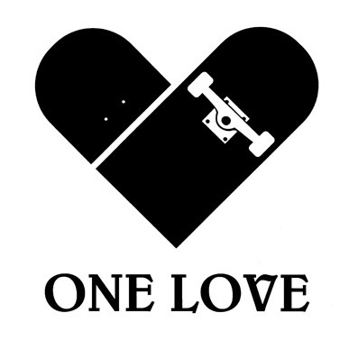

Meet the Team
 We here at One Love Longboards not only work on providing information for fellow skaters, but we Love supporting them as well! Gathering together a team of dedicated, passionate skaters, we hope to broaden the Longboarding World. Below you can get a quick background on some of the radical boarders we call family. It is our dream that our Team will help spread the Love of longboarding to others, and invent new tricks and tips along the way. If you would like to be apart of the Team, feel free to send us a quick email explaining why you think you should join here.
Kelley Scanlon
Born in Glastonbury, Connecticut, but raised in Spofford, New Hampshire, Kelley Scanlon is the founder of One Love Longboards. Kelley started longboarding her freshman year of high school after she grew tired of simply skateboarding. Her cousin recommended she invest in a longboard if cruising was what she preferred, and she has been addicted ever since. Back in high school, she grew quite the crew of fellow female longboarders. That passion followed her to college where she continued to introduce her friends to longboarding. Kelley currently has plans to create a custom longboard company targeted towards female longboarders, currently a small demographic of skaters.
Julia Labbe
The best friend of owner Kelley Scanlon, Julia Labbe knows how to shred it on a longboard! Born in Maine, Julia moved to New Hampshire her freshman year of high school where she met Kelley Scanlon and was thrown into the longboard scene. Still riding her original Surf-One board, Julia loves nothing more than to spend all day boarding with friends. In fact, one time she and her gang of fellow female boarders challenged themselves to board from sun-up to sun-down. This Christmas break she plans on learning the craft of pressing longboards and joining Kelley Scanlon in her dream of starting up a board company. With so much enthusiasm and a down-to-earth spirit, Julia has lots of potential, even if she laughs it off. The next few years show lots of promise for loads of improvement. It won't be long until this girl is on the cover of skate magazines! Oh, and boys, she's single. ;)
Dominique Pallet
Dominique Pallet, born and raised in Sacremento, California, knew she was a longboarder for life the minute she received her first board Christmas of 2004. Growing up with five older brothers, Dominique was a wildchild who lived on the edge. Combining her love of risk-taking and adventure, Dominique has helped shaped the world of longboarding. Already boasting first-place trophies from three downhill competitions and four trick competitions, Dominique is on the pursuit to invent new styles of riding. Be sure to keep an eye out on this fiery rise-to-fame!